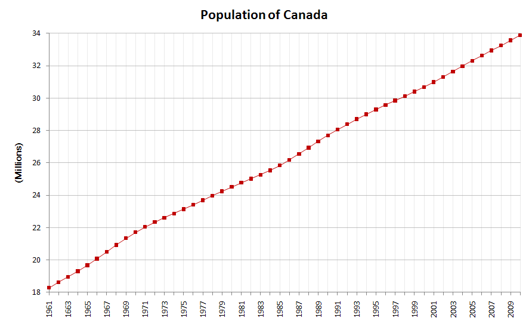
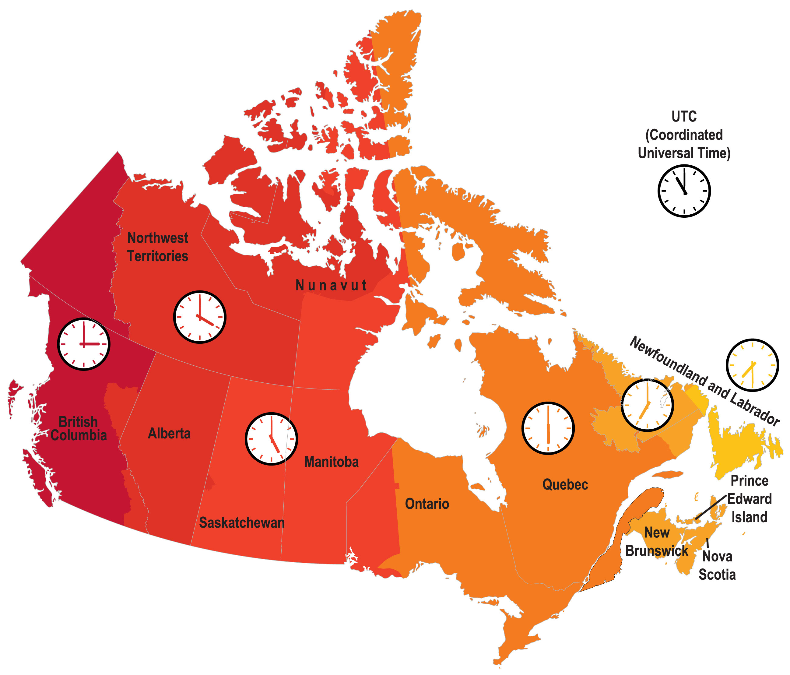
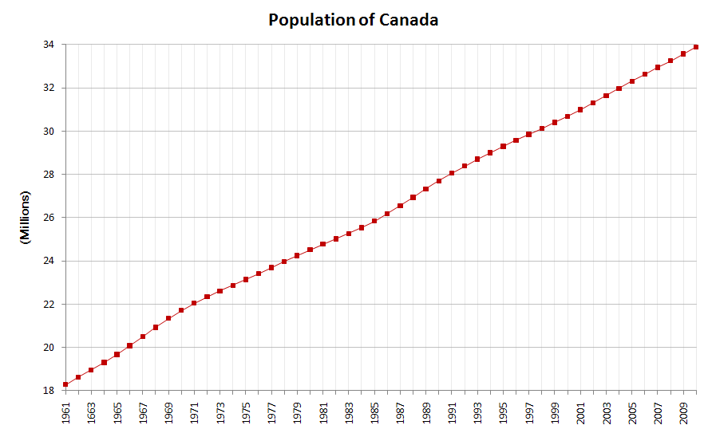
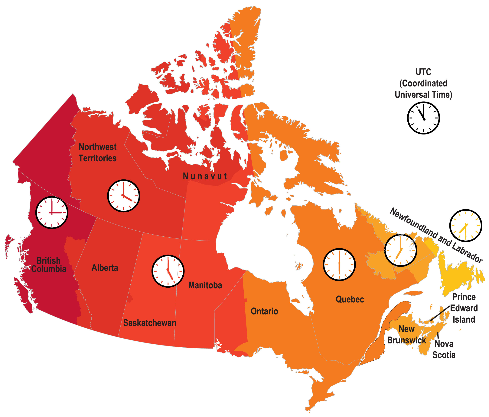

O Canadá é o segundo maior país do mundo em área territorial, tendo quase 10 milhões de quilômetros quadrados.
Possui uma ampla diversidade geográfica, desde florestas exuberantes até montanhas majestosas e pradarias vastas.
Nome oficial: Canadá
Gentílico: canadense
Extensão territorial: 9.984.670 km²
Localização: América do Norte
Capital do Canadá: Ottawa
Clima: Temperado e Ártico
Governo: Democracia parlamentar federal sob um sistema de monarquia constitucional
Divisão administrativa: províncias e territórios
Idioma: inglês e francês
Religiões:
- Catolicismo: 34,7%
- Protestantismo: 13,4%
- Anglicanismo: 4%
- Outras religiões cristãs: 5,1%
- Islamismo: 3,6%
- Outras religiões: 7,5%
- Não religiosos e ateus: 25,8%
- Desconhecido: 5,9%
População: 37.742.000 habitantes (ONU, 2020)
Densidade demográfica: 4,2 hab/km²
Índice de Desenvolvimento Humano (IDH): 0,929
Moeda: Dólar canadense (CAD)
Produto Interno Bruto (PIB): US$ 1,76 trilhões
PIB per capita: US$ 46.194,72
Gini: 0,333
Fuso horário: Seis fusos horários
- Na capital: Horário Padrão do Leste (EST), GMT -5 horas
Relações exteriores:
Apec
Banco Mundial
FMI
Nafta
OEA
G7
G20
ONU

 


